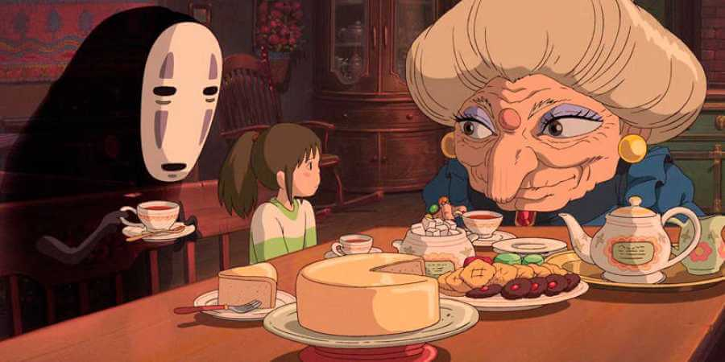
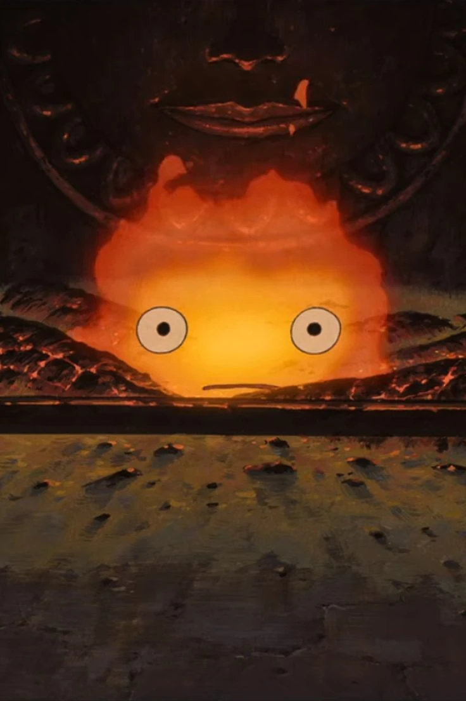
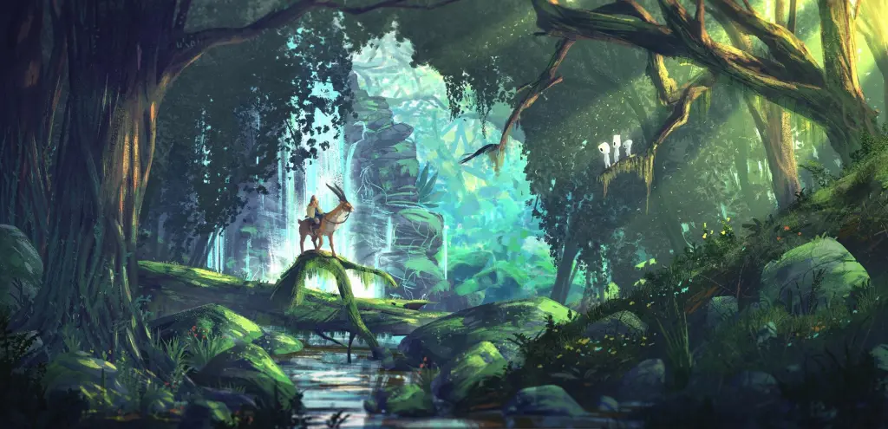

-

Peliculas
Las películas de Studio Ghibli nos llevan a mundos encantadores y únicos, cada uno con su propia historia fascinante. Estos escenarios no solo son visualmente deslumbrantes, sino que enriquecen la trama y ayudan a conectar a los personajes con su entorno, creando una experiencia inolvidable.
-

Personajes
Los personajes de Studio Ghibli son únicos y entrañables. Chihiro, Totoro y Kiki son ejemplos de héroes llenos de vida. Cada uno conecta con el público mediante sus aventuras y emociones, haciendo que se conviertan en íconos amados de la animación. Sus historias siempre nos hacen reflexionar y admirar sus cualidades.
-

Locaciones
Studio Ghibli ha cambiado el cine con su estilo único. Películas como La princesa Mononoke y El castillo ambulante presentan visuales deslumbrantes y exploran temas profundos como la guerra y el medio ambiente, dejando una huella notable en la animación. Cada locación revela mundos fascinantes e inolvidables.